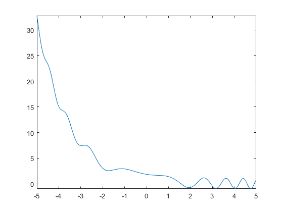
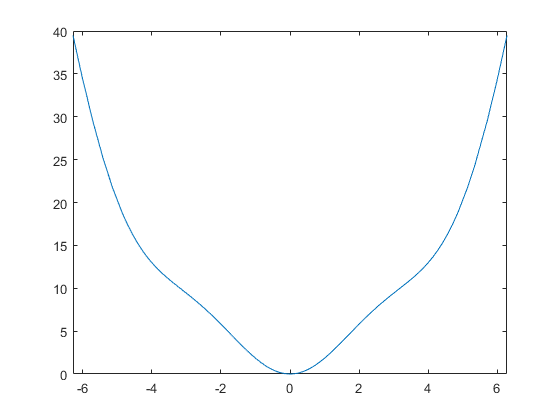
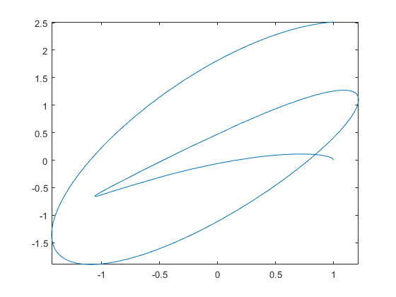
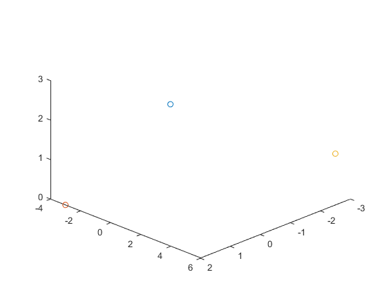
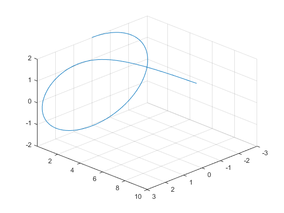
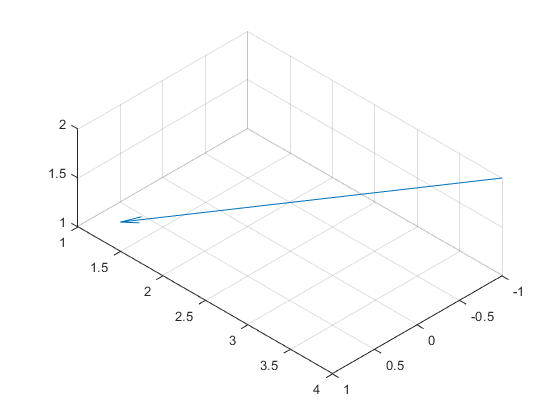
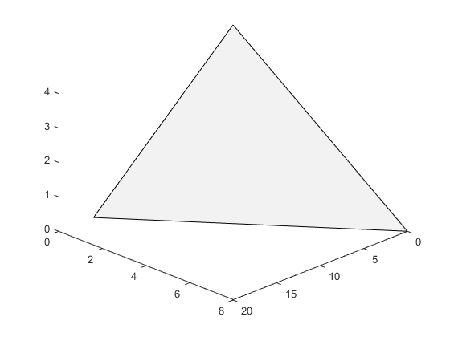
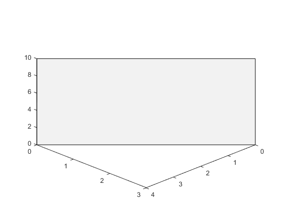
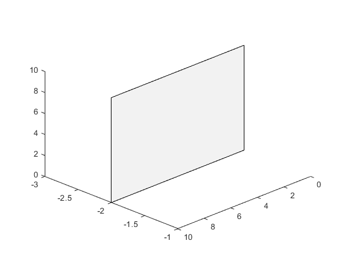

syms x t
assume(t, 'real')
solve(x^4 - x^2 - 2*x^2 == 0, x)
subs((1/sqrt(x)) + exp(1)^(2*x) + x^3, -2)
figure(1)
fplot(sin(x^2 + 1) + 2^(-x))
figure(2)
fplot(x^2 + x*sin(x), [-2*pi, 2*pi])
subs(diff((x + 1)/(x^2 + 2)), x, -1/2)
int(x + (x^2)*sin(x))
int((x + 3)*3^x, -1, 1)
figure(3)
fplot((t/10)*sin(t) + cos(t), (t/5)*cos(t), [0, 4*pi])
r = [t^3, exp(1)^t, 1]
diff(r)
int(r, 0, 1)
P = [2, -1, 3];
Q = [0, 7, 9];
R = [4, -9, -3];
S = [7, -6, -6];
dot(P - Q, R - S)
P = [1, -2, 3];
Q = [2, -1, 3];
n = [2, 2, 3];
dot(P - Q, n)
P = [5, 0, 2];
Q = [1, 1, 1];
R = [0, 1, -2];
S = [1, -2, -0];
abs(dot(P - S, cross(P - Q, P - R)))/norm(cross(P - Q, P - R))
r = [cos(t), cos(t), sqrt(2)*sin(t)];
T = simplify(diff(r)/norm(diff(r)))
N = simplify(diff(T)/norm(diff(T)))
figure(4)
plot3(1, 2, 3, 'o', 2, -3, 0, 'o', -3, 5, 1, 'o')
view([10 10 10])
figure(5)
fplot3(3*sin(t), 1/t, 2*cos(t), [0.1, 2*pi])
view([10 10 10])
figure(6)
fplot3(t, t^2, (9-t^2), [-3,3])
view([10 10 10])
figure(7)
quiver3(-1, 4, 2, 2, -3, -1)
daspect([1 1 1])
view([10 10 10])
figure(8)
points = [16 0 0; 0 8 0; 0 0 4];
patch(points(:,1), points(:,2), points(:,3), [0.95 0.95 0.95]);
view([10 10 10])
figure(9)
points = [4 0 0; 0 3 0; 0 3 10; 4 0 10];
patch(points(:,1), points(:,2), points(:,3), [0.95 0.95 0.95]);
view([10 10 10])
figure(10)
points = [0 -2 0; 0 -2 10; 10 -2 10; 10 -2 0];
patch(points(:,1), points(:,2), points(:,3), [0.95 0.95 0.95]);
view([10 10 10])
ans =
0
0
3^(1/2)
-3^(1/2)
ans =
- (2^(1/2)*1i)/2 - 700279817431099148166711611151079072826764286154490226392555912/87735844434419767305281696655427529428660811143534127403482161
ans =
44/81
ans =
2*cos(x) - x^2*cos(x) + 2*x*sin(x) + x^2/2
ans =
(2*(17*log(3) - 4))/(3*log(3)^2)
r =
[ t^3, (3060513257434037/1125899906842624)^t, 1]
ans =
[ 3*t^2, (3060513257434037/1125899906842624)^t*log(3060513257434037/1125899906842624), 0]
ans =
[ 1/4, -1934613350591413/(1125899906842624*(50*log(2) - log(3060513257434037))), 1]
ans =
0
ans =
-4
ans =
2.7959
T =
[ -(2^(1/2)*sin(t))/2, -(2^(1/2)*sin(t))/2, cos(t)]
N =
[ -(2^(1/2)*cos(t))/2, -(2^(1/2)*cos(t))/2, -sin(t)]
    

   